Lead Vocal
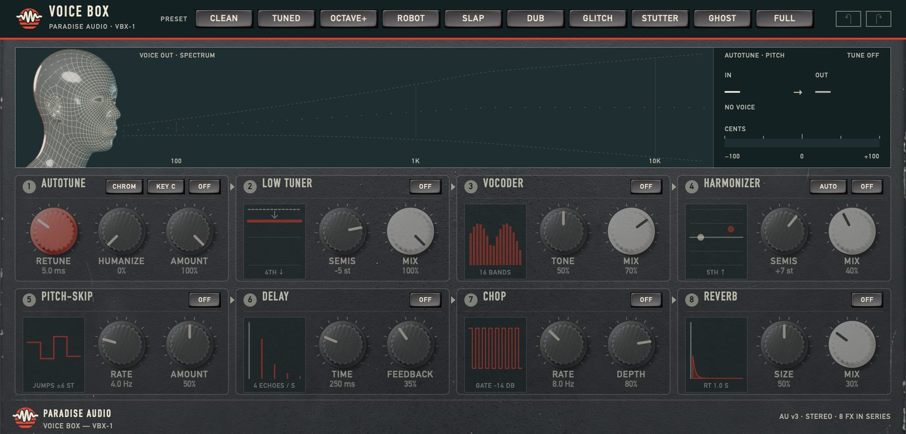
Voice Box
Voice Box
VBX-1Eight vocal effects in one rack, from autotune to vocoder.
A 3D head sings along with you. Its mouth opens and closes with your voice in real time.
FX Return
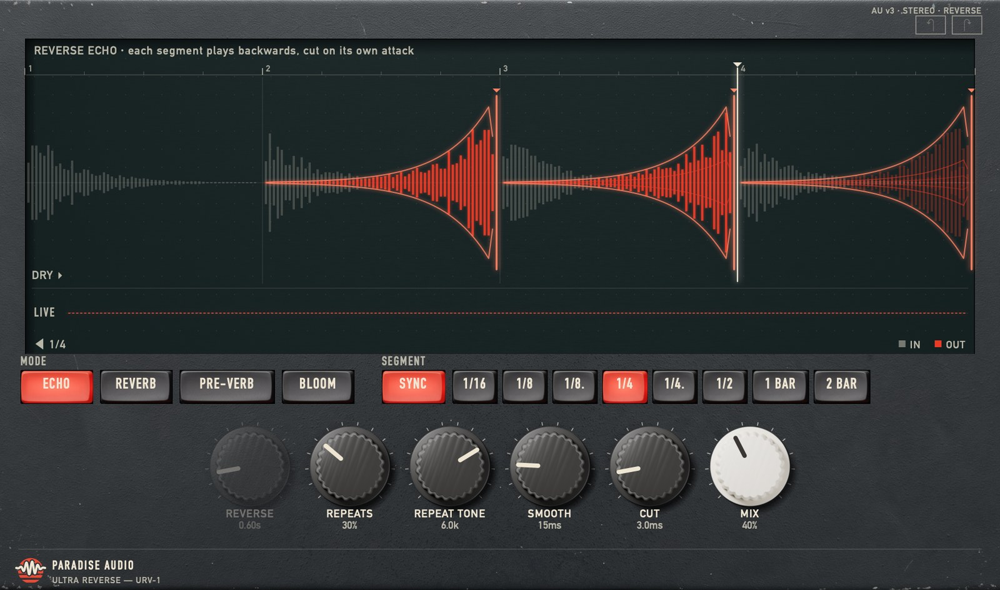
Ultra Reverse
Ultra Reverse
URV-1Reverse echo: every slice comes back backwards.
Each echo plays backwards and lands on the beat, so tails swell into the next hit.
Drum Bus
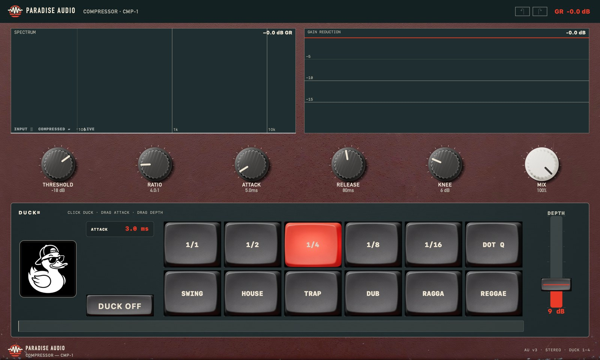
Compressor
Compressor
CMP-1A classic compressor with a duck built in.
The duck pumps the track in time with the song, from whole bars to sixteenths, no sidechain.
Lead Vocal
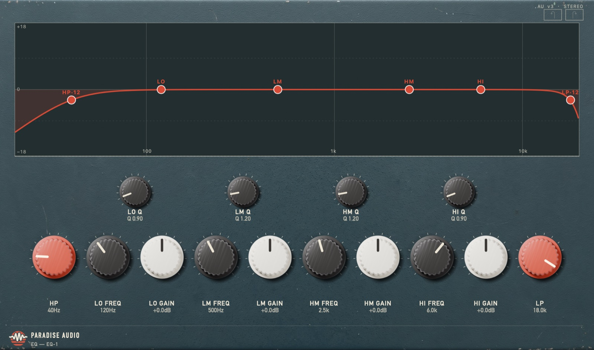
EQ
EQ
EQ-1Four bands, high-pass and low-pass, curve on screen.
High-pass and low-pass sit on red knobs at both ends, so the knobs read like the curve.
Delay Bus
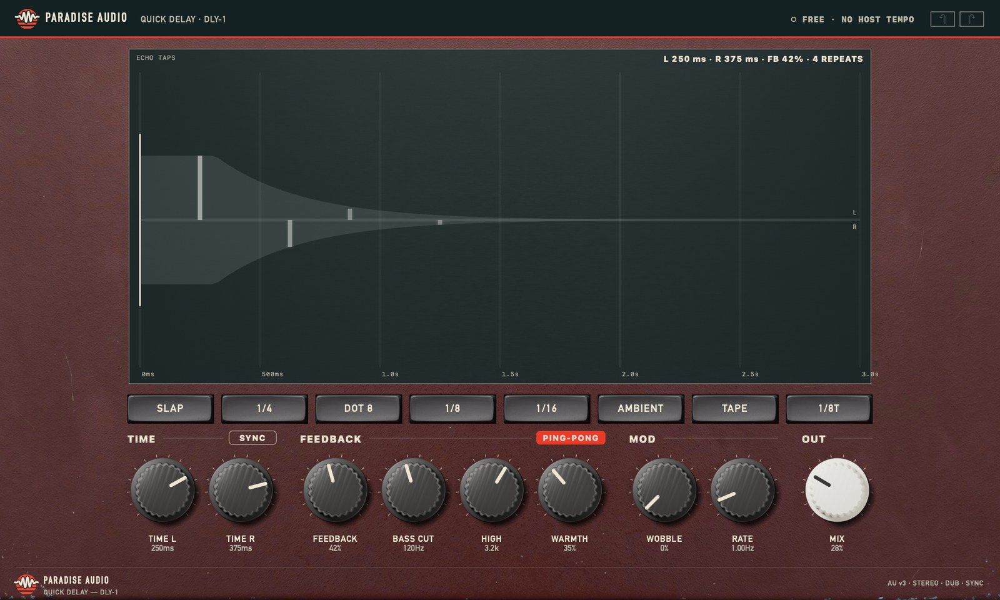
Quick Delay
Quick Delay
DLY-1Tempo-synced delay with eight starting points.
Tape mode adds wobble and warmth, and you watch every echo fade out on the screen.
Reverb Bus
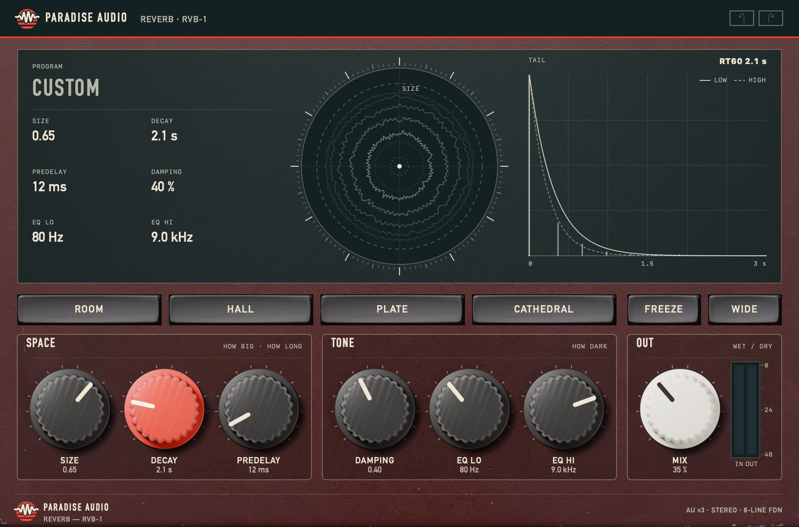
Reverb
Reverb
RVB-1Room, hall, plate and cathedral, one press each.
FREEZE holds the tail forever while you play over it. WIDE spreads it out in stereo.
Bass
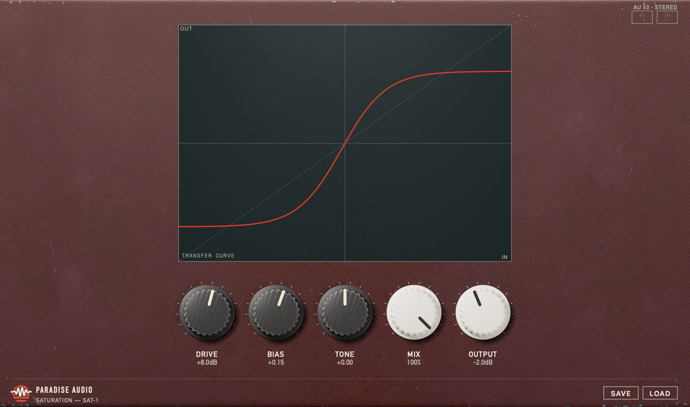
Saturation
Saturation
SAT-1Drive, bias and tone, with the curve on screen.
The curve on screen shows exactly how hard each level gets pushed before it clips.
Lead Vocal
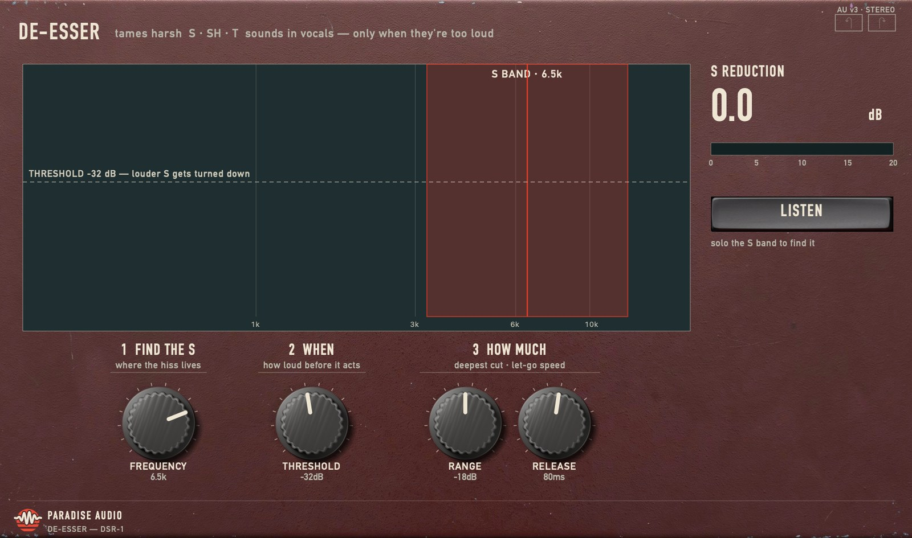
De-esser
De-esser
DSR-1Tames harsh S sounds in three simple steps.
LISTEN plays only what it takes out, so you set it by ear in a few seconds flat.
Stereo Out
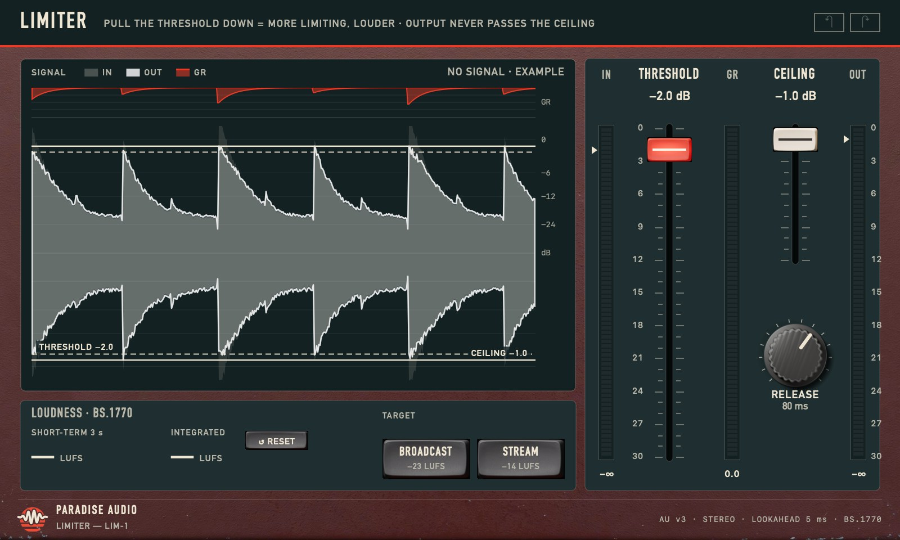
Limiter
Limiter
LIM-1Threshold fader, ceiling fader, signal on screen.
Pull the threshold down and watch the peaks flatten. The output never passes the ceiling.
Drum Bus
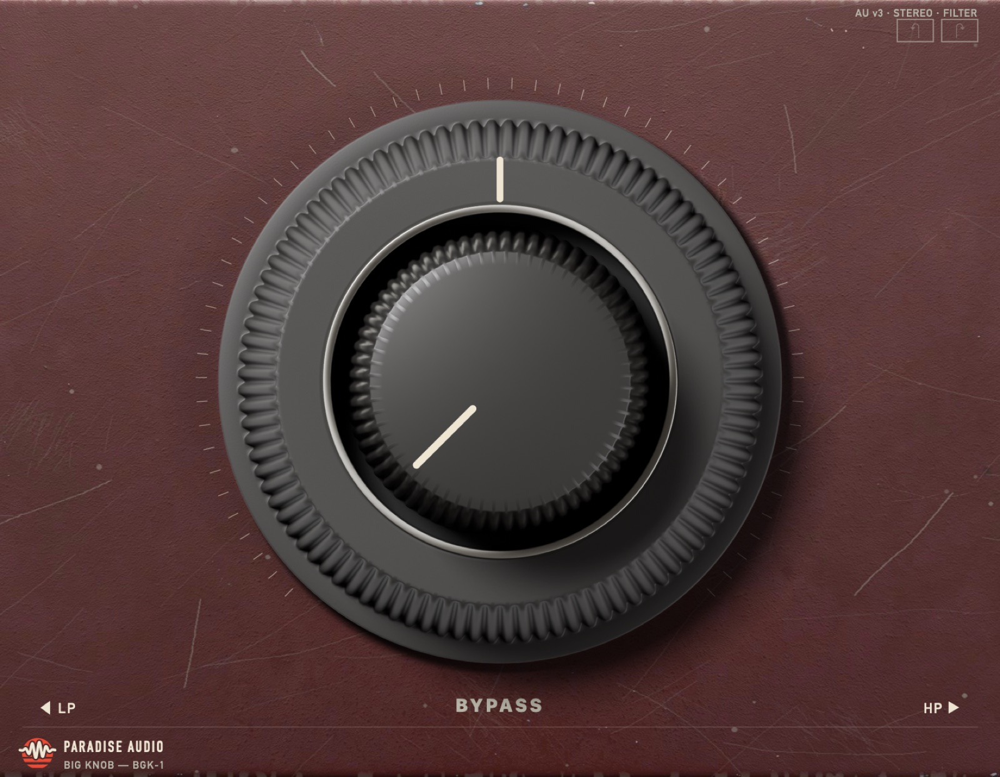
Big Knob
Big Knob
BGK-1One knob: low-pass left, high-pass right.
Turn left to darken, right to thin out. The knob in the middle adds distortion on top.
Lead
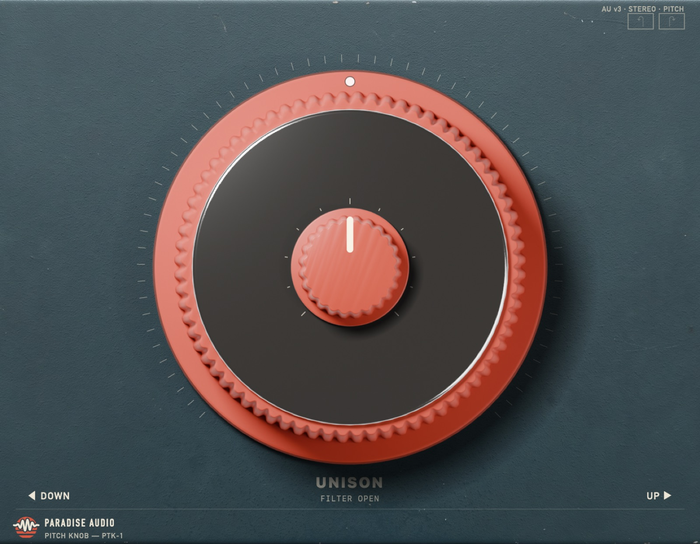
Pitch Knob
Pitch Knob
PTK-1One big knob that shifts the pitch down or up.
Made for live moves: sweep the pitch while the track plays. The middle knob is a filter.